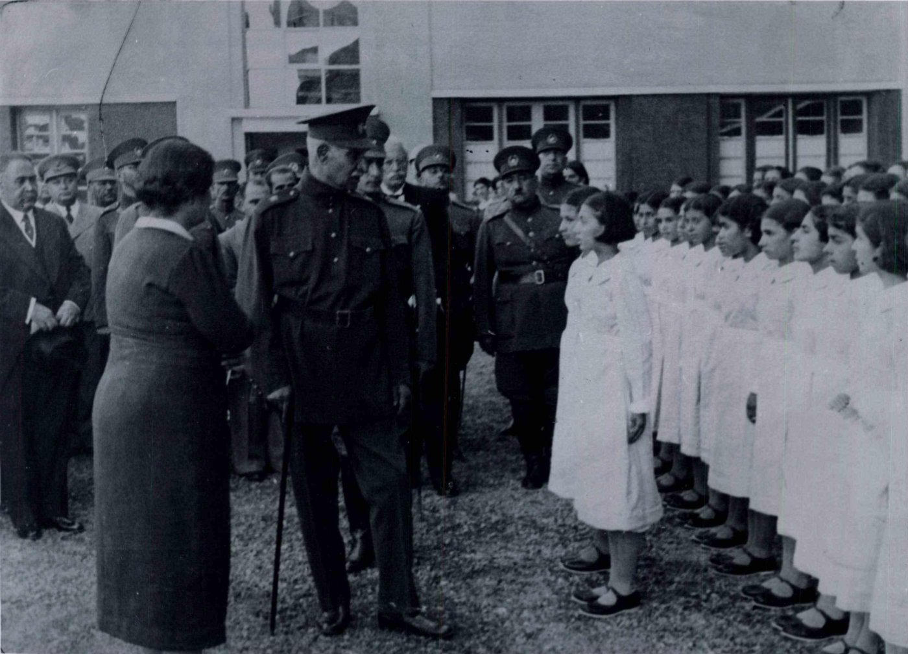

در ۱۱۹۴ عباس میرزا پنج نفر را برای آموختن علم و صنعت به انگلستان فرستاد و میرزا جعفرخان یکی از آنان بود. چهار سال در انگلستان درس خواند، در ۱۱۹۸ به ایران برگشت و در تبریز مهندسخانه را راه انداخت و به تدریس ریاضیات پرداخت. چهار سال بعد، دولت به سیاست او بیش از ریاضیاتش نیاز پیدا کرد و باقی عمرش در کار دولت گذشت، از جمله بهعنوان سیاستمداری مورد اعتماد امیرکبیر.
حاصل آن چهار سال تبریز نخستین کتاب درسی حساب در ایران به معنای نوین آن بود. کتاب را برای محمدمیرزا، پیش از پادشاهیاش، نوشت و تاریخ آن ۱۲۲۴ است، شش سال پیش از گشایش دارالفنون. این نخستین کتابی است که با در نظر داشتن یادگیرنده نوشته شده؛ تمرین دارد، و در کتاب او تفریق افزون بر برداشتن بهصورت فاصله هم دیده میشود. به نظر نمیرسد کتاب در دارالفنون به کار رفته باشد و آموزش ریاضی در آنجا بیآنکه از آن بهره بگیرد از نو آغاز شد.
میرزا جعفرخان مشیرالدوله کیست؟ نوشتهٔ امیر اصغری ←ریاضیات دارالفنون از معلم به شاگرد رسید: از ملا علیمحمد اصفهانی و پسرش نجمالدوله به دانشآموختگانی که بعدها خود در آنجا درس دادند، و از راه آنان به مدرسههای بیرون از آن.
از نخستین معلمان ایرانی دارالفنون و پدر نجمالدوله. اثر بهجاماندهاش، تکملةالعیون، دربارهٔ حل تقریبی معادلههای درجهٔ سوم است، با تنگتر کردن پیدرپی بازهای که ریشه در آن است.

از چهرههای اصلی ریاضیات دارالفنون، که مرجعیت ریاضی مدرسه با او بود. در کتاب جبرش، بدایةالجبر، شیوهای از نوشتار ریاضی برگزید که دانشآموز ایرانی را به ریاضیات جهانی پیوند میداد. از راه او، کار پدرش، ملا علیمحمد اصفهانی، دربارهٔ معادلههای درجهٔ سوم به درسهای دارالفنون راه یافت.

شاگرد اول طبقهٔ مهندسی در دورهٔ دوم دارالفنون. در ۱۲۵۲ همراه ناصرالدینشاه به فرنگ رفت و در کلاسهای پلیتکنیک، از جمله نزد ژوزف برتران، شرکت کرد. از ۱۲۵۴ در دارالفنون ریاضی و فیزیک طبقهٔ توپخانه را درس داد و نخستین کتاب فیزیک درسی تألیفی ایران را نوشت.
حساب علیخان (۱۲۵۸) از نظر گسترهٔ جغرافیایی گستردهترین کتاب ریاضی تاریخ معاصر ایران شد؛ کتابی که برخلاف بیشتر کتابهای درسی پیش و پس از خود، علاوه بر محاسبات بر معنا در ریاضیات هم تأکید داشت. در ۲۹ مهر ۱۲۷۸ درگذشت و خود شاهد موفقیت کتابش نبود.

میرزا رضا مهندس نجمی، زادهٔ تبریز. از دارالفنون فارغالتحصیل شد، از ۱۲۷۸ در همانجا ریاضی درس داد و همهٔ عمر معلم و مؤلف کتاب درسی ماند. شاگرد نجمالدوله و معلم احمد بیرشک بود و ریاضیات دارالفنون را به مدرسههای بیرون از آن رساند.
کتاب هندسهاش حدود دو دهه منبع اصلی تدریس بود تا در ۱۳۱۵ کتاب بیرشک جای آن را گرفت، و حلالمسائل جبریه (۱۲۸۴) پنجرهای کمیاب به جبری است که نجمالدوله درس میداد. او را بسیاری از اوقات با میرزا نظام مهندسالممالک غفاری اشتباه گرفتهاند که هیچوقت معلم دارالفنون نبود.

زادهٔ ۱۲۲۳ در کاشان. از کودکی به فرانسه فرستاده شد، در ۱۲۴۳ نخستین مقالهٔ ریاضیاش را به فرانسوی منتشر کرد و در ۱۲۴۴ با رتبهٔ اول وارد پلیتکنیک شد. در ۱۲۴۶ به ایران برگشت و از شغلی به شغل دیگر چرخید: مترجم، معلم ناصرالدینشاه، مهندس راه، وزیر؛ اما هیچوقت معلم دارالفنون نبود.
در همان حال انبوهی ریاضی نوشت: حساب تغییرات، جبر، حساب دیفرانسیل و انتگرال، مثلثات، مکانیک، هندسهٔ تصویری و ترسیمی، دترمینان. نظامی نمادی متأثر از فارسی هم ساخت، با عددهایی که از راست به چپ نوشته میشوند و نمادهای جبری برگرفته از حروف فارسی. جز خود او کسی به این زبان ننوشت و کتابهایش حتی در ایران ناخواندنی ماند.

در روزگار مریم اردلان، دورهٔ کامل دبیرستان برای دختران ایرانی تقریباً دستنیافتنی بود. پسرها شش سال دبستان و شش سال دبیرستان داشتند؛ تک و توک دبیرستانهای دخترانه فقط سه سالِ دورهٔ اول را داشتند، با این هدف که دختران مادران بهتری شوند یا اگر ازدواج نکردند بتوانند خرج زندگی خود را درآورند. دورهٔ کامل دبیرستان دختران تنها پس از ۱۷ دی ۱۳۱۴ گسترش یافت، و حتی آن زمان معلم ریاضی مدرسههای دخترانه مرد بود، چون معلم ریاضی زن وجود نداشت.
یک استثنا مدرسهٔ دخترانهٔ آمریکایی تهران بود که مبلغان مسیحی در ۱۲۵۳ گشوده بودند. این مدرسه نخست دختران خارجی را میپذیرفت، بعد دختران مسیحی ایرانی، بعد زرتشتی و یهودی، و از ۱۲۷۵ دختران مسلمان را؛ هرچند کمتر خانوادهای به دختر مسلمانش اجازهٔ رفتن به آن را میداد. مریم اردلان، زادهٔ ۱۲۷۱ در تهران، در ۱۲۸۰ وارد این مدرسه شد. در ۱۸ خرداد ۱۲۹۰، در هجدهسالگی، یکی از تنها دو دختر ایرانی و مسلمانی بود که از آن فارغالتحصیل شدند (دیگری مهرتاج رخشان)، و موضوع سخنرانی فارغالتحصیلیاش «آزادی نسوان» بود. بهخاطر استعدادش در ریاضیات، بیدرنگ در همان مدرسه معلم ریاضی شد.
زندگیاش ادامهٔ همان سخنرانی بود. جنگ جهانی اول او را در سنندج ماندگار کرد و خانهاش را به مدرسهٔ سوادآموزی زنان تبدیل کرد. ریاست یک مدرسهٔ پسرانهٔ خصوصی را به او پیشنهاد کردند؛ نپذیرفت و بهجای آن خواست مدرسهای دولتی برای دختران ساخته شود تا کارش پس از رفتنش از سنندج هم بماند. این دبستان در ۱۳۰۵ گشوده شد و به خواست خودش نه به نام او، که به نام شاعره مستوره اردلان نام گرفت. در ۱۳۱۷، وقتی برای نخستین هنرستان دختران ایران مدیر خارجی پیشنهاد شد، او به ریاست آن رسید. در ۱۳۴۵ درگذشت.
زندگینامهاش را در سازمان زنان به امانت گذاشت و بخشهایی از آن در کارنامهٔ زنان مشهور ایران (۱۳۵۲) نوشتهٔ فخری قویمی ماند. دههها بعد، نوهاش پروین اردلان از اعضای اولیهٔ کمپین یک میلیون امضا بود که در ۱۳۸۵ برای تغییر قوانین تبعیضآمیز علیه زنان آغاز شد.

زادهٔ ۱۲۷۲ در تنکابن. دبستان را در بابل گذراند و برای تحصیل به دارالفنون تهران آمد. در ۱۲۸۹ همراه دیگر شاگردان اعزامی دولت به فرانسه رفت و پس از چهار سال تحصیل در پاریس، در ۱۲۹۳ به ایران برگشت. از ۱۲۹۵ در دارالفنون، مدرسهٔ نظام، علمیه و دارالمعلمین ریاضی درس داد.
در ۱۳۰۴ عضو کمیسیون کتب وزارت فرهنگ شد، از ۱۳۰۸ تا ۱۳۱۶ عضو شورای عالی فرهنگ بود و در ۱۳۱۷ مدیرکل وزارت فرهنگ شد. در ۱۳۱۹، وقتی وزارت فرهنگ کالج آمریکایی البرز را خرید، نخستین رئیس ایرانی دبیرستان البرز شد. در ۱۳۲۲ به معاونت و سپس کفالت وزارت فرهنگ رسید، اما کلاس درسش را رها نکرد. یکی از شاگردانش به یاد میآورد:
در این مقام هم استاد همواره سروقت برای درس دادن حاضر میشد. یادم هست که روزهای سرد زمستان که کمتر مأمور عالیرتبهای از جای برمیخاست تا به سرکار خویش برود، کلاس سیچهلنفری ریاضی ما که درسش با استاد بود تعطیل نمیشد. هیچوقت تأخیر و غیبت نداشت.
بعدها معاون وزارت کشاورزی و دوباره معاون وزارت فرهنگ شد، در ۱۳۳۱ بازنشسته شد و در ۱۵ آذر ۱۳۳۶ در لندن درگذشت.
کتابش، اصول علم جبر و مقابلهٔ مقدماتی، در ۱۳۰۰ برای سالهای دوم و سوم متوسطه منتشر شد؛ تنها چند سال پس از نخستین امتحانات نهایی متوسطه در ایران (۱۲۹۲). جلدهای بعدی آن را به یک دورهٔ کامل جبر رساندند و تا سالها کتاب درسی مدرسههای ایران ماند. کتاب برای هر چه ارائه میدهد استدلال میآورد، به زبانی که برای دانشآموز مناسب است؛ اما اوج هنر وحید در انتخاب و طراحی مسئلهها و تمرینهای آن است.

حلالمسائل ریاضی در سال ۱۳۰۶ منتشر شد و احتمالاً نخستین مجلهٔ ریاضی ایران با توزیع عمومی است. در زمان انتشار آن، دبیرستانهای ایران رو به افزایش بودند و حلالمسائل ریاضی در هر شماره مسئلههایی از امتحانات نهایی ایران و امتحانات و مسابقات ریاضی اروپا ارائه میکرد، با این قول که در یکی دو شمارهٔ بعد راهحل آنها را هم بیاورد. مجله حدود یک سال منتشر شد.
روی جلد نوشته است «ناصر – هورفر – ریاضی»: نه یک نفر، که سه معلم.
- علیاصغر ناصر، که بعدها رئیس بانک ملی ایران شد و امضایش روی اسکناسهای ایران بود.
- حسین هورفر، که بعدها از پرتألیفترین نویسندگان نخستین دورهٔ کتابهای درسی ریاضی «مطابق برنامهٔ وزارت معارف» شد.
- عبدالله ریاضی، که آن زمان بیستویک ساله بود و بعدها رئیس دانشکدهٔ فنی دانشگاه تهران و رئیس مجلس شورای ملی شد.


در ۱۳۱۴، با گشوده شدن راه ورود زنان به دانشسرای عالی، فصل تازهای در تاریخ ریاضیات ایران آغاز شد. تنها چند سال بعد، نخستین نسل زنان ایرانی که در رشتهٔ ریاضی فارغالتحصیل شدند پدیدار شد.
از ۱۳۱۸ تا ۱۳۲۱، در چهار سال پیاپی، چهار زن در رشتهٔ ریاضی فارغالتحصیل شدند: بتول همایون در ۱۳۱۸، مهپاره ممقانی در ۱۳۱۹، مهین سنگ در ۱۳۲۰ و قمر غمخوار در ۱۳۲۱.
این چهار زن در دورهای گذار در آموزش عالی ایران تحصیل کردند. آموزش ریاضی هنوز پیوند نزدیکی با سنت قدیمی تربیت معلم و دانشسرا داشت، در حالی که دانشگاه تازهتأسیس تهران و دانشکدهٔ علوم آن در حال شکلگیری بود. اندکی بعد، تحصیل ریاضی بهطور روشنتری در دانشکدهٔ علوم دنبال شد. به این معنا، این چهار زن در میان دو دورهٔ نهادی ایستادهاند و با هم آغاز حضور پیوستهٔ زنان در آموزش عالی ریاضی ایران را نشان میدهند.

زادهٔ ۱۳۰۶. دبستان را در قزوین و دبیرستان را در البرز تهران گذراند. در شانزدهسالگی دفترچهای در هندسه نوشت، به تاریخ ۱۳۲۲، و آن را به فرهنگ ایران تقدیم کرد. سپس به فرانسه رفت و تا دکتری در آنجا درس خواند، همهجا همراه همسرش، آراکس پاپازیان.
در ۱۳۴۱ برای سال تحصیلیای به ایران دعوت شد که گروه ریاضی دانشگاه ملی در آن تأسیس شد، و نخستین مدیر این گروه شد. در دو سالی که در تهران بود، کتاب مقدمهای بر آنالیز نوین را به فارسی نوشت. این کتاب در ۱۳۴۲ برندهٔ جایزهٔ سلطنتی کتاب سال شد، یکی از تنها شش کتابی که از ۱۳۳۲ تا ۱۳۵۷ در ردهٔ علوم محض این جایزه را گرفتند. بسیاری از ریاضیدانان آیندهٔ ایران نخستین بار با کتاب او با ریاضیات مدرن آشنا شدند.
در قرارداد خود قید کرده بود که تا وقتی دکتر علی شیخالاسلام رئیس دانشگاه است، قرارداد معتبر است، و زمزمهٔ برکناری شیخالاسلام شنیده میشد که در ۱۳۴۳، سالی که مادر آراکس درگذشت، با خانوادهاش به فرانسه رفت. در ۷ آذر ۱۳۴۳ از استراسبورگ نامهای به مجلهٔ یکان نوشت تا استعفایش را اعلام کند: رشتهٔ ریاضی دانشکدهٔ علوم دانشگاه ملی بدون مشورت با او و بیاطلاع قبلی منحل شده بود، در حالی که او هنوز ریاست آن را بر عهده داشت؛ پس وجود خود را در کادر تعلیماتی دانشگاه زائد دانست و با وجود زیان مالی، لغو قراردادش را اعلام کرد.
دیگر برنگشت. باقی عمر را در استراسبورگ به ریاضیات گذراند و با نام آزیک نقاشی میکرد.
وازگن آوانسیان کیست؟ نوشتهٔ امیر اصغری ←


خواندن آدمها و ریاضیات رایگان است. حمایت شما به ما کمک میکند زندگیها، عکسها، اسناد و داستانهای فراموششده از تاریخ ریاضیات ایران را پیدا کنیم و آنها را به فارسی و انگلیسی در دسترس همگان بگذاریم.
هر کمک مالی ردهای پراکنده را به تاریخهایی بدل میکند که دیگر از دست نخواهند رفت.